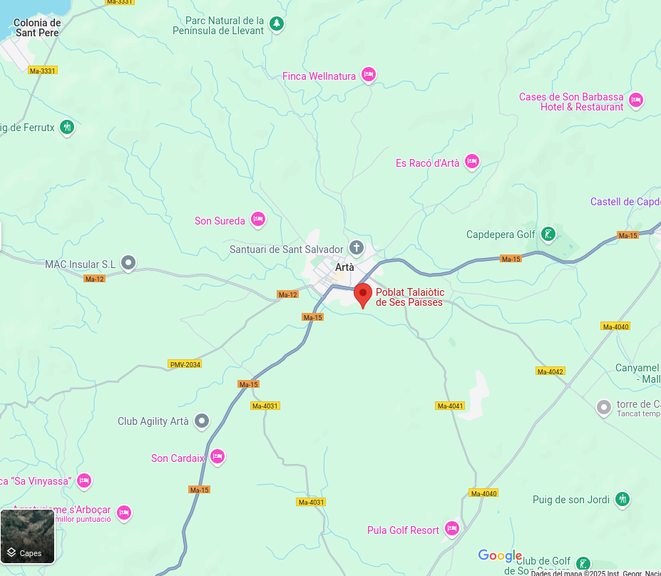

Descripció
Ses Païsses és un poblat talaiòtic al municipi d'Artà. És dels més complets i ben conservats de Mallorca, en aquest poblat destaca la gran murada ciclòpia, que conserva tot el perímetre de 320 metres i la seva espectacular porta monumental, que s'ha convertit en un dels símbols de la prehistòria de Mallorca.
Ubicació
Ses Païsses és un poblat talaiòtic al municipi d'Artà.

Imatges